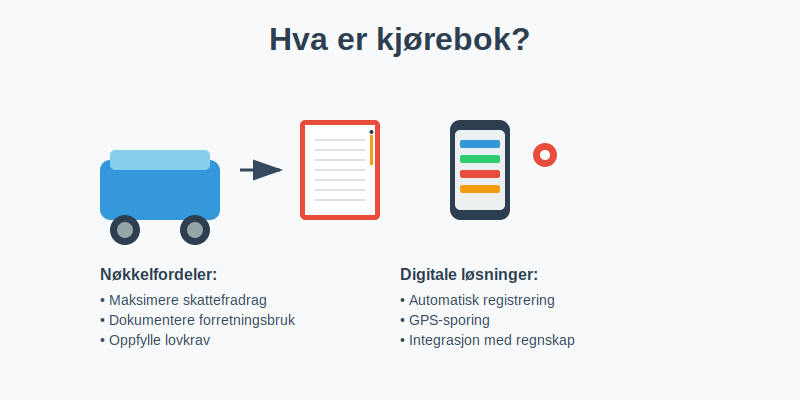
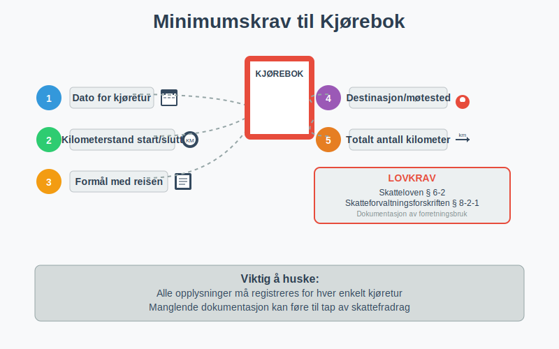
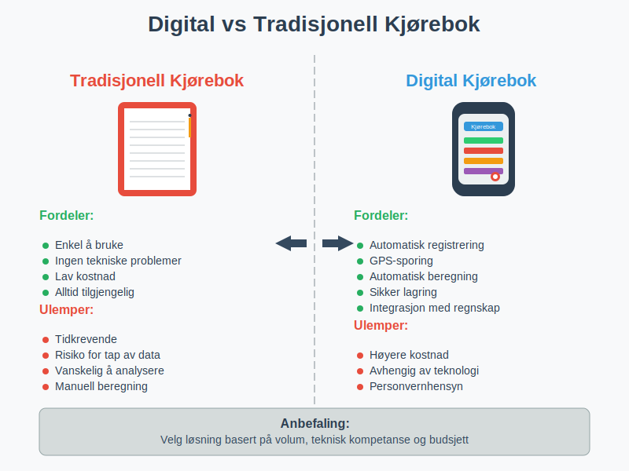
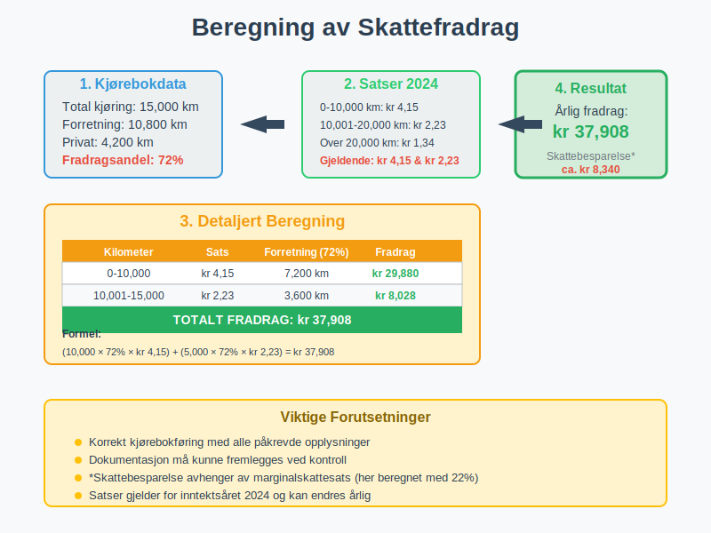
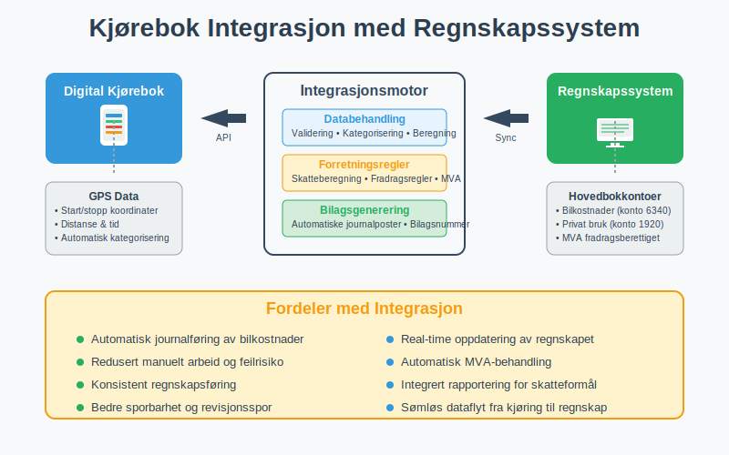
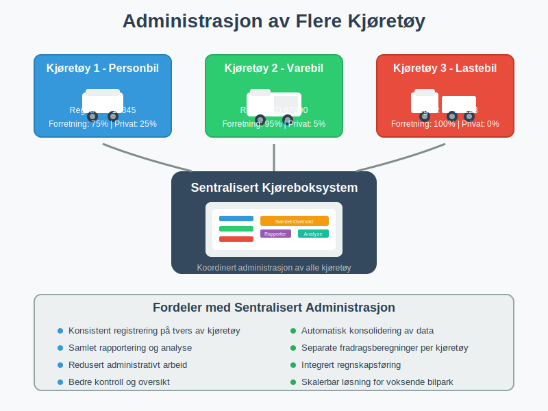
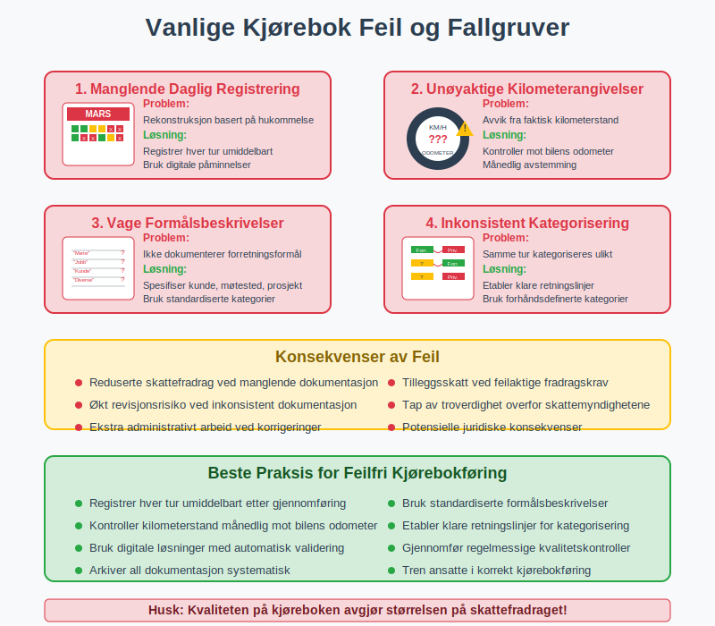

En kjørebok er et systematisk register over kjøretøybruk som dokumenterer alle tjenestereiser og private kjøreturer. Dette er et kritisk verktøy for bedrifter og selvstendig næringsdrivende som ønsker å maksimere skattefradrag og opprettholde korrekt regnskap i henhold til norske regnskapsregler.
Kjøreboken er ikke bare et administrativt krav, men en strategisk ressurs som kan generere betydelige skattebesparelser når den føres korrekt. For å sikre at alle fradrag dokumenteres på riktig måte, er systematisk kjørebokføring essensielt.

Lovgrunnlag og Krav til Kjørebok
Skattelovens Bestemmelser
I henhold til skatteloven § 6-2 og skatteforvaltningsforskriften § 8-2-1 må alle som krever fradrag for bilkostnader kunne dokumentere forretningsbruken av kjøretøyet. Kjøreboken er det primære dokumentasjonsverktøyet som skattemyndighetene aksepterer.
Minimumskrav til Dokumentasjon
For at en kjørebok skal være gyldig i skattemessig sammenheng, må den inneholde følgende informasjon:
- Dato for hver kjøretur
- Kilometerstand ved start og slutt
- Formål med reisen (forretning eller privat)
- Destinasjon og eventuelt kunde/møtested
- Totalt antall kilometer kjørt

Typer Kjørebøker
1. Tradisjonell Papirbasert Kjørebok
Den klassiske metoden hvor alle opplysninger registreres manuelt i en fysisk bok eller skjema.
Fordeler:
- Enkel å bruke
- Ingen tekniske problemer
- Lav kostnad
Ulemper:
- Tidkrevende
- Risiko for tap av data
- Vanskelig å analysere data
2. Digital Kjørebok
Moderne løsninger som bruker GPS-teknologi og mobilapper for automatisk registrering.
Fordeler:
- Automatisk registrering
- Redusert administrativt arbeid
- Bedre dataanalyse
- Sikker lagring
Ulemper:
- Høyere kostnad
- Avhengig av teknologi
- Personvernhensyn

Praktisk Kjørebokføring
Daglig Rutine
For å sikre nøyaktig kjørebokføring, anbefales følgende daglige rutine:
- Registrer kilometerstand ved start av dagen
- Logg hver enkelt tur umiddelbart etter gjennomføring
- Spesifiser formålet med reisen tydelig
- Kontroller totalsummer ved dagens slutt
Månedlig Oppfølging
- Sammenlign med faktiske kilometertall på bilen
- Kontroller at alle dager er registrert
- Arkiver dokumentasjon systematisk
- Analyser kjøremønster for optimalisering
Skattefradrag og Økonomiske Fordeler
Beregning av Fradrag
Skattefradraget for bilkostnader beregnes basert på forholdet mellom forretningskjøring og total kjøring:
Fradragsberettiget andel = (Forretningskilometer / Total kilometer) × 100%
Eksempel på Beregning
| Måned | Total km | Forretning km | Privat km | Fradragsandel |
|---|---|---|---|---|
| Januar | 2,500 | 1,800 | 700 | 72% |
| Februar | 2,200 | 1,500 | 700 | 68% |
| Mars | 2,800 | 2,100 | 700 | 75% |
| Totalt Q1 | 7,500 | 5,400 | 2,100 | 72% |

Maksimale Fradrag
For 2024 er de maksimale fradragssatsene:
- Kilometer 0-10,000: kr 4,15 per km
- Kilometer 10,001-20,000: kr 2,23 per km
- Kilometer over 20,000: kr 1,34 per km
Digitale Løsninger og Teknologi
GPS-baserte Systemer
Moderne kjøreboksløsninger bruker GPS-teknologi for å automatisk registrere:
- Startpunkt og destinasjon
- Kjøretid og distanse
- Rute og hastighet
- Automatisk kategorisering av turer
Integrasjon med Regnskapssystemer
Avanserte løsninger kan integreres direkte med regnskapssystemer for sømløs bilagsbehandling:
- Automatisk journalføring av bilkostnader
- Direkte overføring til hovedbok
- Integrert rapportering for skatteformål

Kontroll og Revisjon
Skattemyndighetenes Kontroll
Skatteetaten kan kreve fremleggelse av kjørebok ved kontroll. Vanlige kontrollpunkter inkluderer:
- Konsistens mellom registrerte kilometer og bilens odometer
- Logisk sammenheng mellom reisemål og forretningsaktivitet
- Fullstendighet i registreringen
- Korrekt beregning av fradragsandel
Revisjonsspor
For bedrifter som er underlagt revisjon, må kjøreboken være del av det totale revisjonssporet:
- Sporbarhet fra kjørebok til bilag
- Konsistens med andre regnskapsdokumenter
- Arkivering i henhold til bokføringsloven
Spesielle Situasjoner
Leasingbiler og Firmabiler
For leasingbiler og firmabiler gjelder spesielle regler. Se også vår Firmabil for en detaljert gjennomgang:
- Fordelsbeskatning av privat bruk må beregnes
- Dokumentasjon av privat vs. forretningsbruk er kritisk
- Separate beregninger for ulike kostnadstyper
Flere Kjøretøy
Bedrifter med flere kjøretøy må:
- Føre separate kjørebøker for hvert kjøretøy
- Koordinere registreringen på tvers av biler
- Sikre konsistens i registreringsmetoder

Beste Praksis og Anbefalinger
Etablering av Rutiner
- Implementer daglige registreringsrutiner
- Tren ansatte i korrekt kjørebokføring
- Etabler kontrollmekanismer for kvalitetssikring
- Dokumenter prosedyrer og retningslinjer
Teknologivalg
Ved valg av digital kjørebokløsning, vurder:
- Brukervennlighet og intuitivt grensesnitt
- Integrasjonsmuligheter med eksisterende systemer
- Datasikkerhet og personvernbeskyttelse
- Kostnad vs. tidsbesparelse
Arkivering og Oppbevaring
Kjørebøker må oppbevares i minimum 5 år etter regnskapsårets slutt, i henhold til bokføringsloven. Dette gjelder både papirbaserte og digitale versjoner.
Vanlige Feil og Fallgruver
Typiske Registreringsfeil
- Manglende daglig registrering som fører til hukommelsesbasert rekonstruksjon
- Unøyaktige kilometerangivelser som ikke stemmer med bilens odometer
- Vage formålsbeskrivelser som ikke dokumenterer forretningsformålet
- Inkonsistent kategorisering av private vs. forretningsreiser
Konsekvenser av Feil
- Reduserte skattefradrag ved manglende dokumentasjon
- Tilleggsskatt ved feilaktige fradragskrav
- Økt revisjonsrisiko ved inkonsistent dokumentasjon

Fremtidige Utviklingstrender
Automatisering og AI
Fremtidige kjørebokløsninger vil trolig inkludere:
- Kunstig intelligens for automatisk kategorisering av turer
- Maskinlæring for forbedret nøyaktighet over tid
- Prediktiv analyse for optimalisering av kjøremønstre
Regulatoriske Endringer
Skattemyndighetene vurderer kontinuerlig:
- Digitale standarder for kjørebokføring
- Økte krav til dokumentasjon og sporbarhet
- Harmonisering med EU-regelverk
Konklusjon
En kjørebok er langt mer enn bare et administrativt krav - det er et strategisk verktøy som kan generere betydelige skattebesparelser når det brukes korrekt. Ved å implementere systematiske rutiner, velge riktige teknologiske løsninger og opprettholde høy kvalitet i dokumentasjonen, kan bedrifter maksimere sine skattefradrag samtidig som de oppfyller alle lovkrav.
Investering i en god kjørebokløsning, enten digital eller tradisjonell, vil raskt betale seg gjennom økte fradrag og redusert administrativt arbeid. Det viktigste er å etablere gode rutiner fra starten og opprettholde konsistent registrering over tid.
For bedrifter som ønsker å optimalisere sin økonomiske styring, er kjørebokføring en integrert del av det totale regnskaps- og bokføringssystemet som bidrar til både compliance og lønnsomhet.